Префектура Киото · Киото · сладости и угощения
Что увезти из Киото: десять угощений, которые продают только в городе
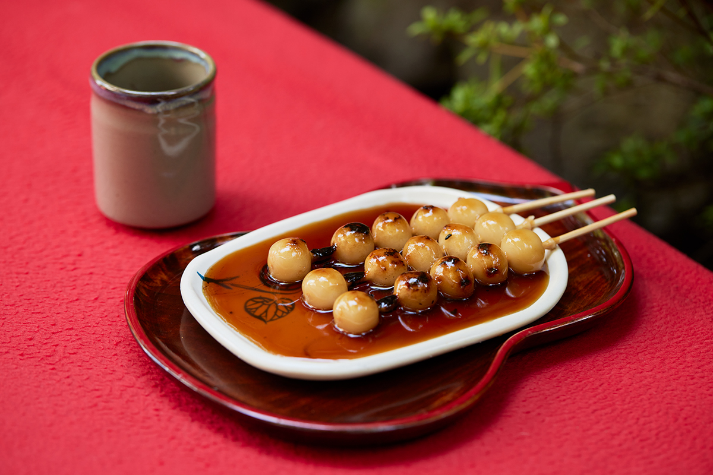
Лучший подарок из Киото тот, который можно купить только здесь. В этом списке есть и сладости, знакомые каждому киотцу, и новинки старых кондитерских, но за всеми придётся идти в саму лавку.
У святилища
«Камо Митараси Тяя»: данго, похожие на пузырьки воды
Чайная «Камо Митараси Тяя» стоит у ворот святилища Симогамо-дзиндзя и работает уже около ста лет. Очередь за её главным угощением, митараси-данго, почти не прерывается. Форма у сладости не случайна: шарики повторяют пузырьки воды, которые поднимаются со дна пруда Митараси на территории святилища. Это монзэн-гаси, сладость, которую продают у ворот святилища.
На шпажку нанизывают пять шариков, причём верхний отделён от остальных. Так шпажка напоминает фигуру человека: голова и тело. В этом есть смысл оберега от несчастий.
Вкус у сладких и чуть подгоревших данго двоякий. Если съесть их в чайной, они хрустят снаружи, как и положено только что поджаренным. А в данго, которые берут с собой, соус успевает впитаться, и шарики становятся мягкими и тягучими.
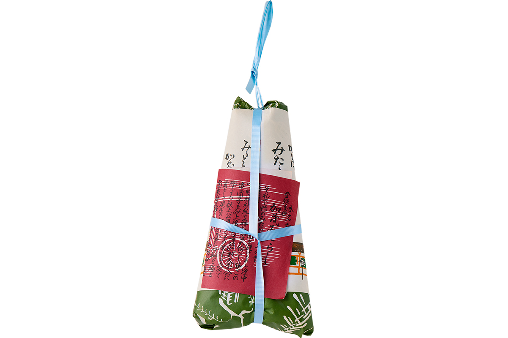
«Камо Митараси Тяя»
- Адрес
- префектура Киото, Киото, район Сакё, Симогамо-Мацуноки-тё, 53
- Телефон
- +81 75-791-1652
- Часы работы
- 9:30–18:30 (последний заказ 17:30), в субботу, воскресенье и праздники до 19:00 (последний заказ 18:00)
- Выходные
- среда и два вторника в месяц (нерегулярно)
Нама-яцухаси
Shogoin Yatsuhashi: сладости в форме ирисов
Ирис какицубата нарисован на красной жестяной коробке, в которую Shogoin Yatsuhashi упаковывает свои яцухаси, и этот цветок для кондитерской много значит. Из него сделали отдельную сладость: «Какицубата» лепят из нама-яцухаси, мягкого теста из рисовой муки, в форме цветка. Тесто плотное и упругое, а белый и коричневый варианты чуть пахнут корицей.
Из того же теста делают «Хана-цукуси», и её облик меняется по сезонам: иногда попадаются и праздничные фигурки вроде журавля и черепахи. Осенью 2023 года, до конца октября, продавали «Хана-цукуси» в варианте «Кури»: белое тесто с начинкой из каштановой пасты. Обе сладости бывают только в главном магазине и в филиале Кумано.
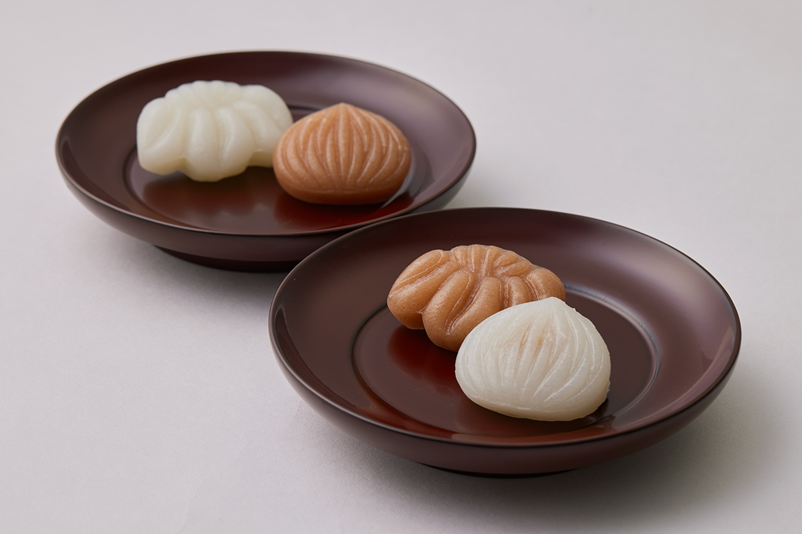
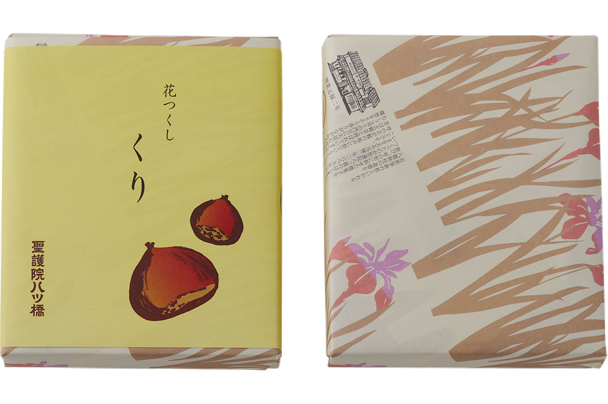
Shogoin Yatsuhashi, главный магазин
- Адрес
- префектура Киото, Киото, район Сакё, Сёгоин-Санно-тё, 6
- Телефон
- +81 75-752-1234
- Часы работы
- 9:00–18:00
- Выходные
- без выходных
Караита
«Мидзута Гёкуундо»: пятьсот лет одного печенья
Если киотцу нужно что-то вручить в знак благодарности или просто прийти в гости не с пустыми руками, он часто покупает караиту. Это тонкое печенье ведёт происхождение от подношений богам эпохи Хэйан (794–1185). «Мидзута Гёкуундо» когда-то держала чайную на территории святилища Камигорё-дзиндзя и восстановила вкус караиты по старинным книгам. С тех пор, больше пятисот лет, лавка печёт только её.
Печенье делают вручную, поэтому тесто успевает как следует напитаться водой, и караита получается лёгкой. Помещается она на ладони, а достоинства на этом не кончаются. В элегантную чёрную коробку её упаковывают только в самой лавке.
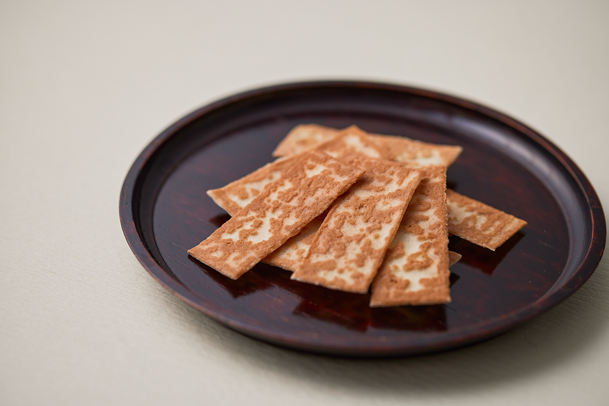
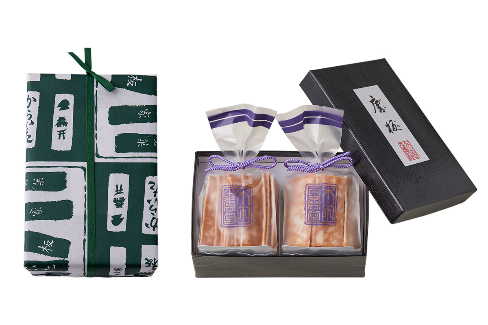
«Мидзута Гёкуундо»
- Адрес
- префектура Киото, Киото, район Камигё, Ками-Горёмаэ-тё, 394
- Телефон
- +81 75-441-2605
- Часы работы
- 10:00–17:00
- Выходные
- воскресенье, праздники
Монака
Saryo FUKUCHA: цветы из вафель от чайного дома
Fukujuen торгует чаем из Удзи с 1790 года, а в его кафе Saryo FUKUCHA больше всего внимания достаётся монаке, сладости из двух хрустящих вафель с начинкой. Вафли здесь в форме цветка с пятью лепестками, и начинка будто выплёскивается наружу.
«Итиго фурава-монака» появилась вместе с открытием кафе и соединяет три вкуса: клубнику, шоколадный крем с маття и белую бобовую пасту. Осенняя «Кури ходзитя-монака» сочетает пасту из цельных бобов с шоколадным кремом на ароматном обжаренном чае ходзитя. К ним стоит купить и чай, чтобы перерыв на сладкое дома прошёл как следует. Обе монаки продаются и в кафе на вокзале Киото.
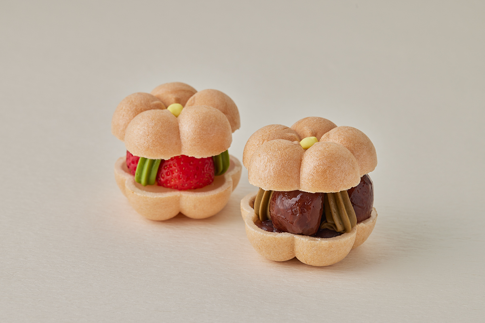
Saryo FUKUCHA, кафе на Сидзё
- Адрес
- префектура Киото, Киото, район Симогё, угол улиц Сидзё-дори и Томинокодзи-дори, магазин Fukujuen, 2-й этаж
- Телефон
- +81 50-3152-2902
- Часы работы
- 11:00–18:00
- Выходные
- среда
Кинтон
Shioyoshiken: сладость, которая меняет имя
В киотских сладостях сжата японская привычка находить поэзию в повседневной жизни. Shioyoshiken в квартале ткачей Нисидзин держат пять поколений одной семьи, и солидность старой лавки чувствуется в каждом уголке её потемневшего от времени фасада. Покупать здесь приятно уже само по себе.
«Осима» это кинтон: белая бобовая паста в «шубке» из крошек бобовой пасты со вкусом чёрного сахара. Сладость меняет облик и название вместе с сезоном. В начале зимы её посыпают хлопьями сушёного рисового теста, и на прилавок она выходит под именем «Хацусимо», «первый иней».
Не забудьте и сухие сладости хигаси, одну из визитных карточек лавки. Предыдущий глава Shioyoshiken одним из первых стал делать хигаси только из тонкого сахара васамбон.
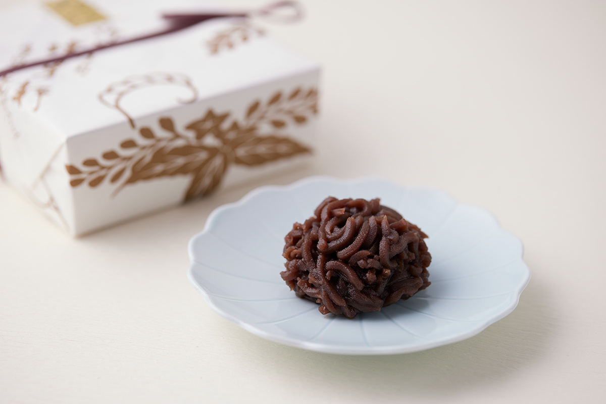
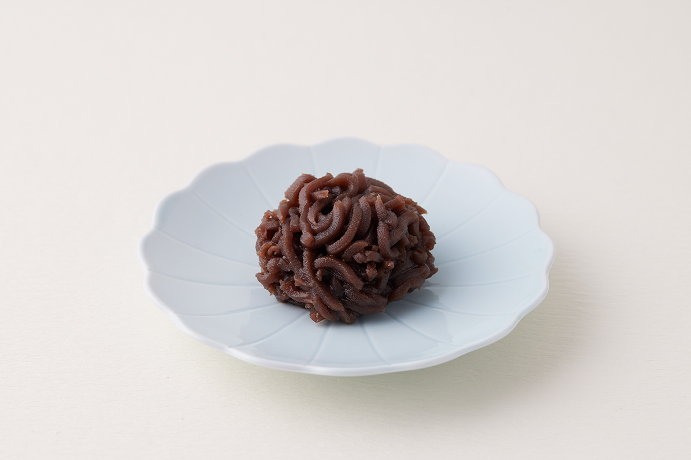
Shioyoshiken
- Адрес
- префектура Киото, Киото, район Камигё, Куромон-дори, Накадатиури агару, Хида-доно-тё, 180
- Телефон
- +81 75-441-0803
- Часы работы
- 9:00–17:30
- Выходные
- воскресенье, праздники, одна среда в месяц
Варабимоти
«Хонкэ Цукимотия Наомаса»: продают только в день изготовления
Лавка открылась в 1804 году и с тех пор не меняла места. Её главную сладость «Цукимоти» хозяева квартала Понтотё издавна приносили в подарок. Лавка делает и свежие сладости: так повелось с тех времён, когда она поставляла сладкое придворной знати.
Варабимоти здесь готовят со времён позапрошлого главы. Нежную пасту из протёртых бобов заворачивают в тесто из настоящего крахмала папоротника вараби, а ароматная мука кинако из японской сои делает вкус ещё глубже. Купить варабимоти можно только в лавке, и съесть их нужно в тот же день. И всё же к полудню у прилавка уже стоят стопки заказанных заранее коробок.
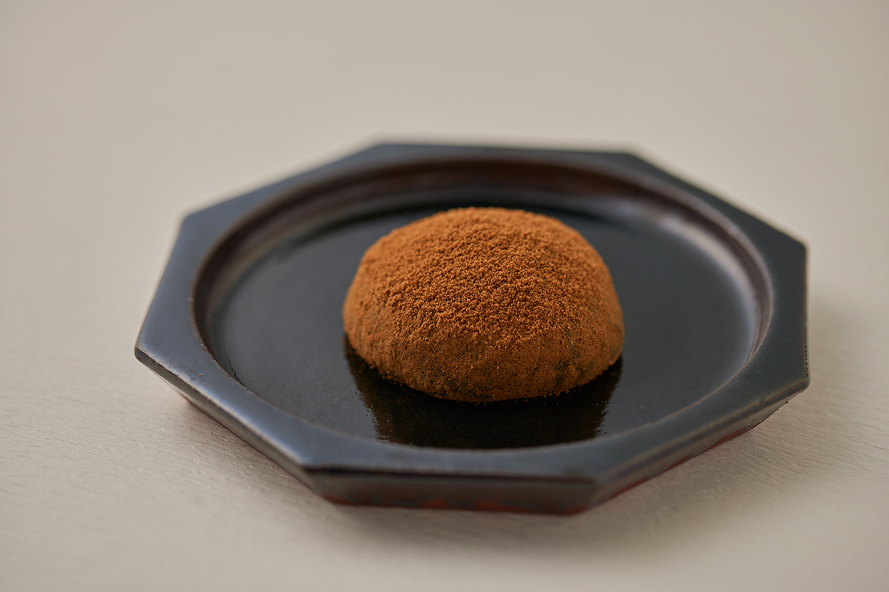
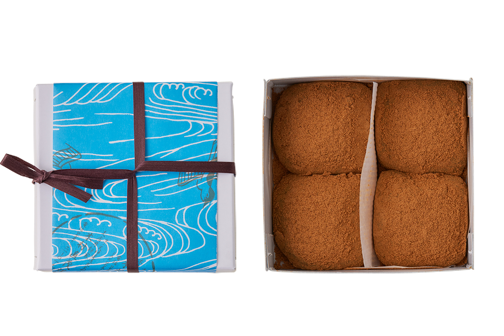
«Хонкэ Цукимотия Наомаса»
- Адрес
- префектура Киото, Киото, район Накагё, Ками-Осака-тё, 530-1
- Телефон
- +81 75-231-0175
- Часы работы
- 10:00–18:00
- Выходные
- четверг, третья среда месяца
Пудинг
«Мураками Кайсиндо»: первая новинка за 35 лет
Европейская кондитерская «Мураками Кайсиндо» приносит дух старины на угол улиц Тэрамати и Нидзё. Её здание начала эпохи Сёва (1926–1989) потемнело до янтарного цвета и хранит память о модных временах.
Ванильный пудинг «Тэрамати» придумал глава кондитерской в четвёртом поколении. Для старой лавки, которая бережёт традиции и всё время ищет новые вкусы, это первая новинка за 35 лет, и глава до сих пор готовит пудинг сам. Тесто ароматизируют ванилью лучшего сорта, и оно такое нежное, что его почти можно пить. Даже в упаковке видно Киото: мешочек под японскую бумагу перевязан вощёной тесьмой.
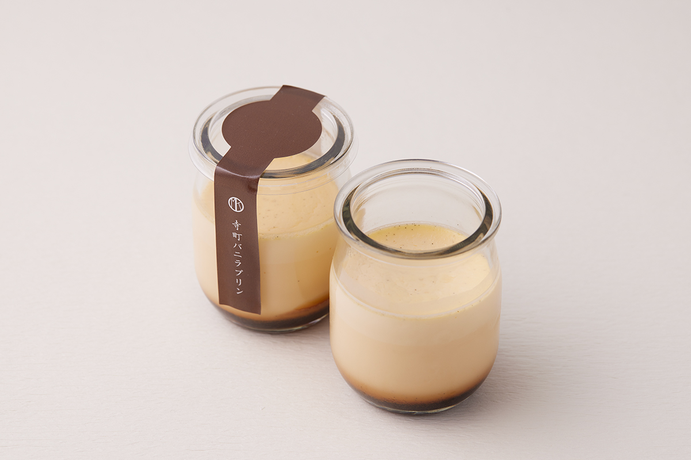
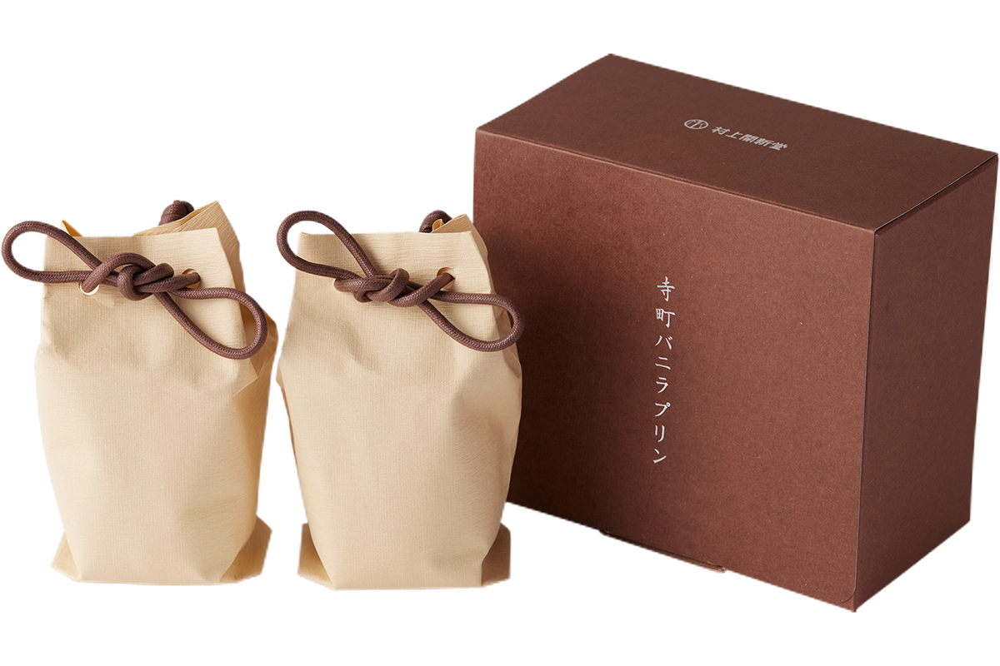
«Мураками Кайсиндо»
- Адрес
- префектура Киото, Киото, район Накагё, Тэрамати-дори, Нидзё агару, восточная сторона
- Телефон
- +81 75-231-1058
- Часы работы
- 10:00–18:00
- Выходные
- воскресенье, третий понедельник месяца, праздники
Бобы
Mamemasa: бобовые сладости ещё тёплыми
Старая лавка Mamemasa прославилась пятицветными бобами «Госики-мамэ». Мастерская у неё прямо за главным магазином, и лавка этим воспользовалась: начала продавать бобовые сладости, только что приготовленные. Обычно такие сладости сначала день отлёживаются, потом их фасуют по пакетам, и свежими их почти никто не пробует. А бобы, ещё чуть тёплые и очень ароматные, оказываются совсем другими.
В ассортименте около десяти видов, их удобно грызть на прогулке по городу. Например, «Мансай-мамэ» с имбирём (378 иен за 100 г), арахис с васаби (432 иены за 100 г) и кешью в белой глазури (637 иен за 100 г), цены 2023 года. Какой вид готовят в этот день, лавка сообщает в инстаграме.
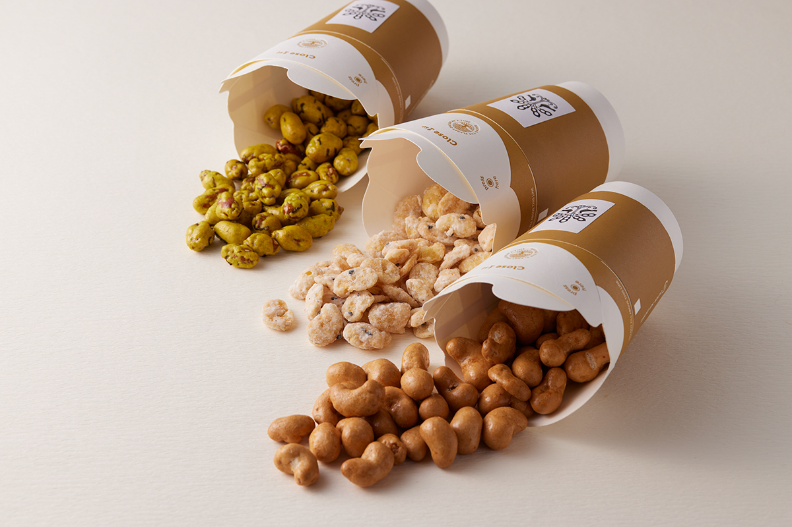
Mamemasa, главный магазин
- Адрес
- префектура Киото, Киото, район Накагё, Эбисугава-дори, Янагинобаба ниси-ири, Рокутёмэ, 264
- Телефон
- +81 75-211-5211
- Часы работы
- 8:00–18:00
- Выходные
- воскресенье
Острое масло
Saikan Wong: откуда пошло масло, которое едят ложкой
Шеф и владелец Saikan Wong учился готовить в Гонконге и открыл свой ресторан в 2006 году. В гонконгских ресторанах принято делать собственное острое масло, и он тоже придумал своё. Масло стояло на столах, о нём заговорили сотрудники и актёры киностудии Toei в Киото, и со временем «масло, которое едят», острое масло с хрустящими кусочками, стало привычной японской приправой.
Готовят его три-четыре дня, и вкус у него напористый. Ресторан стоит далеко от центра, но по выходным в нём особенно людно. Купить масло можно, только если поесть здесь же.
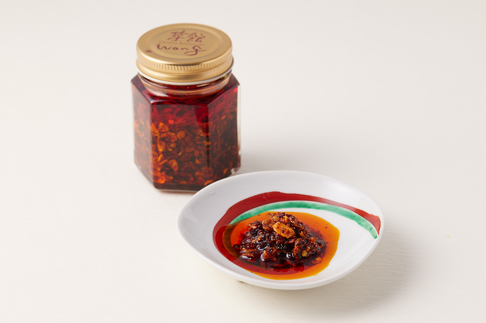
Saikan Wong
- Адрес
- префектура Киото, Киото, район Укё, Удзумаса-Хоригаути-тё, 32-2
- Телефон
- +81 75-872-5216
- Часы работы
- 11:30–14:00, 18:00–22:30 (последний заказ 20:30)
- Выходные
- понедельник, четвёртое и пятое воскресенье месяца
Суши
«Тидоритэй»: коробка суши по своему вкусу
Старую лавку киотских суши «Тидоритэй» любят даже чайные домики Гиона. По словам главы лавки в четвёртом поколении, киотские суши это когда «рис хорошо приправлен, и их вкусно есть даже без соевого соуса».
Коробку с суши здесь собирают очень свободно: суши с макрелью саба, например, можно заказать от двух кусочков. Тонкие роллы с маринованным овощем нара-дзукэ появились когда-то как гостинец актёрам за кулисы, и их тоже кладут сколько захочется. Заказ лучше продумать заранее: посмотреть сайт и сообщить лавке, что примерно хочется. С приветливыми хозяевами, мужем и женой, к лавке, которая больше 120 лет работает в квартале гейш, легко найти подход.
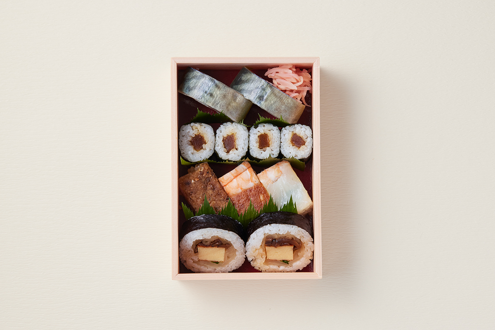
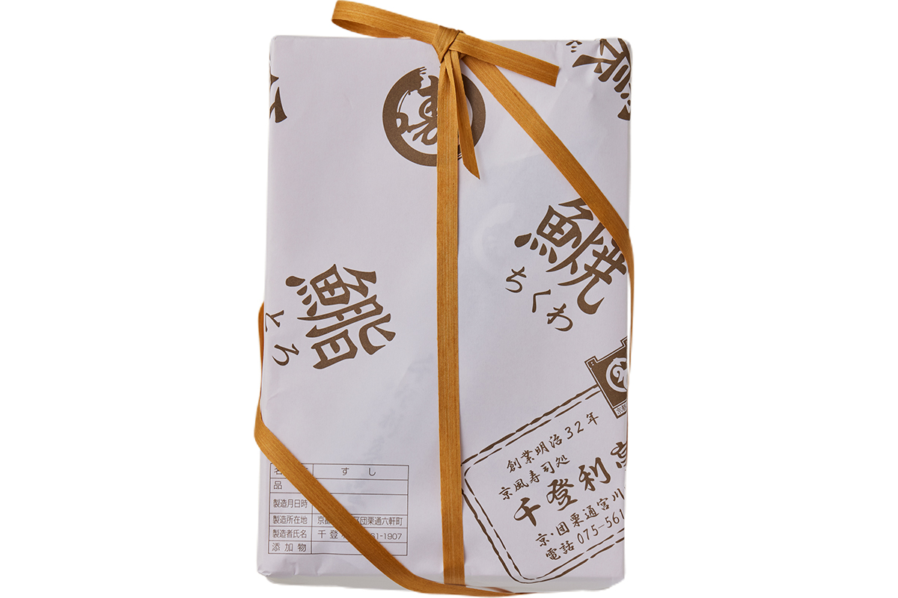
«Тидоритэй»
- Адрес
- префектура Киото, Киото, район Хигасияма, Донгури-дори, Ямато-одзи ниси-ири, Рокукэн-тё, 203
- Телефон
- +81 75-561-1907
- Часы работы
- 11:00–18:00
- Выходные
- четверг, иногда среда
Фото: Юкиё Дайдо.